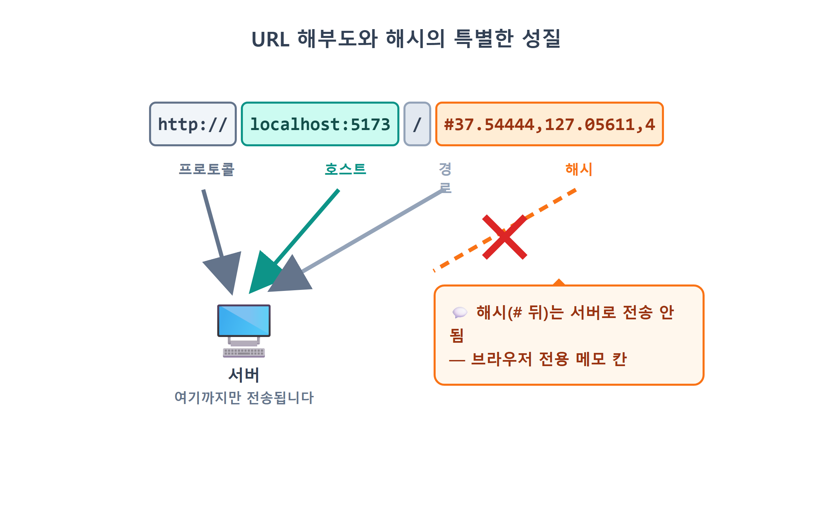
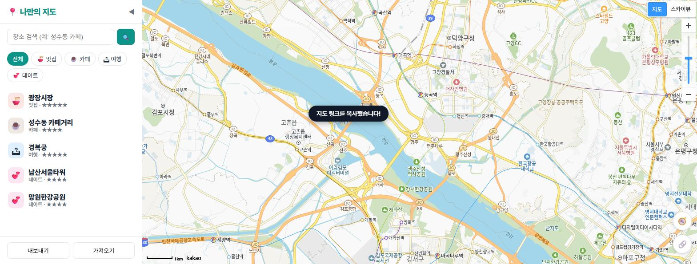
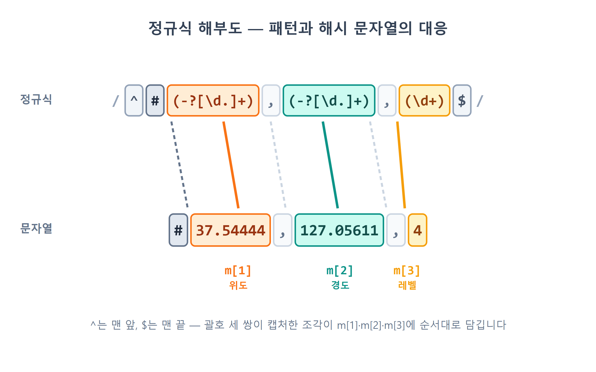
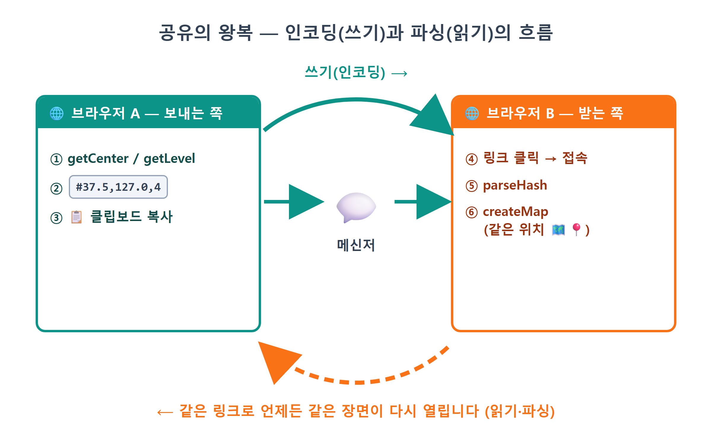
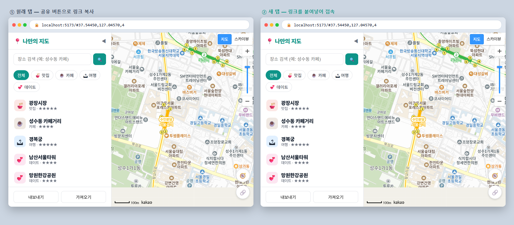
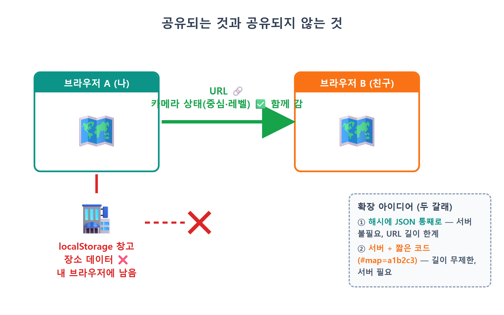

21장 URL로 지도 공유¶
이 장에서 배우는 것
- URL의 구조와 해시(#) 부분이 하는 특별한 역할을 이해합니다
- 지도의 현재 상태(중심 좌표·확대 레벨)를
#lat,lng,level형식의 문자열로 인코딩합니다 - 정규식(정규 표현식)으로 해시를 안전하게 파싱해 지도 상태로 되돌립니다
- clipboard API(
navigator.clipboard.writeText)로 링크를 클립보드에 복사합니다 history.replaceState로 방문 기록을 어지럽히지 않고 주소창만 바꿉니다
20장까지 오면서 우리 지도는 제법 쓸 만한 물건이 되었습니다. 장소를 저장하고, 검색하고, 별점과 메모를 달고, 내 위치까지 표시합니다. 이쯤 되면 자연스럽게 이런 순간이 옵니다. 성수동 카페 골목을 딱 좋은 확대 레벨로 맞춰 놓고, 친구에게 말하고 싶어지는 겁니다. "야, 여기 봐봐."
그런데 지금은 방법이 없습니다. 주소창의 URL을 복사해 보내면 친구의 화면에는 서울시청 근처, 레벨 7의 기본 화면이 뜹니다. 9장에서 우리가 지도의 시작 위치를 코드에 박아 두었기 때문입니다. 내가 어디를 보고 있었는지는 내 브라우저만 알고, URL에는 그 정보가 한 글자도 담겨 있지 않으니까요.
카카오맵이나 구글맵을 써 보셨다면 이 문제의 해답도 이미 보셨을 겁니다. 지도를 이리저리 움직인 뒤 주소창을 보면 URL 어딘가에 좌표 비슷한 숫자들이 붙어서 따라다닙니다. 그 URL을 복사해 보내면 받은 사람도 정확히 같은 곳을 보게 되죠. 비밀은 간단합니다. 지도의 상태를 URL 안에 새겨 넣는 것입니다. 이번 장에서는 우리 지도에도 그 능력을 답니다. 서버도, 데이터베이스도, 로그인도 필요 없습니다. URL이라는 한 줄의 문자열만으로 "내가 보던 화면"을 통째로 배달하는 기술입니다.
21.1 URL을 해부해 봅시다 — 해시(#)라는 특별한 자리¶
먼저 URL이 어떻게 생겼는지 뜯어봐야 합니다. 우리 개발 서버의 주소에 해시를 붙인 예를 놓고 부위별로 이름을 붙여 보겠습니다.
http://localhost:5173/#37.54444,127.05611,4
└──┬──┘└─────┬──────┘│└──────────┬─────────┘
프로토콜 호스트 경로 해시(hash)
- 프로토콜(
http:) — 통신 규약. 배포하면https:가 됩니다. - 호스트(
localhost:5173) — 어느 서버의 몇 번 포트인지. 자바스크립트에서는 프로토콜과 호스트를 합쳐location.origin으로 읽습니다. - 경로(
/) — 서버 안의 어느 페이지인지.location.pathname입니다. - 해시(
#37.54444,...) —#기호부터 끝까지.location.hash로 읽습니다.
이 중 해시는 나머지와 결정적으로 다른 성질을 두 가지 갖고 있습니다.
첫째, 해시는 서버로 전송되지 않습니다. 브라우저가 서버에 페이지를 요청할 때 # 뒤의 내용은 잘라 내고 보냅니다. 서버 입장에서는 #37.5,127.0,4가 붙어 있든 말든 똑같은 요청이고, 똑같은 index.html을 돌려줍니다. 해시는 처음부터 끝까지 브라우저 안에서만 쓰라고 만들어진 메모 칸인 셈입니다.
둘째, 해시가 바뀌어도 페이지가 새로고침되지 않습니다. 경로가 바뀌면 브라우저는 새 페이지를 통째로 다시 받아 오지만, 해시만 바뀌면 화면은 그대로 두고 값만 갱신합니다. 원래 용도가 "같은 문서 안의 특정 위치로 점프"(긴 문서의 목차 링크를 떠올려 보세요)였기 때문입니다.
이 두 성질을 합치면 재미있는 결론이 나옵니다. 해시는 서버 몰래, 새로고침 없이, 자바스크립트가 마음대로 읽고 쓸 수 있는 URL 속 주머니입니다. 우리 같은 프론트엔드 개발자가 앱의 상태를 URL에 실어 나르기에 이보다 좋은 자리가 없습니다. 실제로 수많은 웹앱이 이 기법을 씁니다. 이름도 있습니다. URL로 상태를 공유한다고 해서 딥 링크(deep link)1라고 부르죠.

21.2 상태를 문자열에 담기 — 인코딩 설계¶
주머니를 찾았으니 무엇을 담을지 정할 차례입니다. "지금 보고 있는 화면"을 복원하는 데 필요한 최소한의 정보는 무엇일까요? 9장에서 지도를 만들 때 넘겼던 3요소를 떠올리면 답이 나옵니다. 중심 위도, 중심 경도, 확대 레벨. 이 세 숫자만 있으면 지도는 같은 화면을 다시 그릴 수 있습니다.
이 세 숫자를 하나의 문자열로 만드는 규칙을 정합니다. 우리는 가장 단순한 방식을 씁니다.
쉼표로 이어 붙인 것뿐입니다. 이렇게 데이터(자바스크립트의 숫자 3개)를 약속된 형식의 문자열로 바꾸는 일을 인코딩(encoding), 반대로 문자열을 다시 데이터로 되살리는 일을 디코딩(decoding) 혹은 파싱(parsing)이라고 부릅니다. 17장에서 만난 JSON.stringify와 JSON.parse도 정확히 같은 관계였죠. 이번에는 형식이 JSON이 아니라 우리가 직접 정한 쉼표 규칙일 뿐입니다. 인코딩과 디코딩은 항상 짝으로 설계해야 합니다. 쓰는 쪽과 읽는 쪽이 같은 약속을 공유하지 않으면, 보낸 링크는 그냥 깨진 링크가 됩니다.
한 가지 디테일이 더 있습니다. 지도에서 좌표를 그대로 꺼내면 37.544438912...처럼 소수점 아래가 한없이 길게 나옵니다. 이걸 전부 URL에 실을 필요가 있을까요? 위도·경도의 소수점 다섯째 자리는 실제 거리로 약 1미터에 해당합니다. 지도 공유에서 1미터 오차는 아무 의미가 없으니, 다섯 자리에서 잘라도 충분합니다. 자바스크립트의 toFixed(5)가 바로 그 일을 합니다. 숫자를 "소수점 아래 5자리 문자열"로 반올림해 주죠. URL은 짧을수록 보기 좋고, 메신저에서 덜 흉하게 접힙니다.
💡 팁
"상태를 URL에 담는다"는 발상은 지도 앱만의 것이 아닙니다. 유튜브의 ?t=90(90초 지점부터 재생), 쇼핑몰의 ?page=3&sort=price(3페이지, 가격순 정렬)처럼, 잘 만든 웹 서비스의 URL에는 화면 상태가 녹아 있습니다. 좋은 URL은 그 자체로 복원 가능한 스냅샷입니다. 여러분이 즐겨 쓰는 서비스의 주소창을 유심히 봐 두는 것만으로 좋은 설계 공부가 됩니다.
21.3 공유 버튼 만들기 — 인코딩 + 클립보드 복사¶
설계가 끝났으니 만들 차례입니다. 화면 오른쪽 아래, 20장에서 단 🧭 내 위치 버튼 밑에 🔗 공유 버튼을 하나 두겠습니다. 누르면 현재 지도 상태를 해시로 만들어 주소창에 반영하고, 완성된 링크를 클립보드에 복사한 뒤 토스트로 알려 주는 흐름입니다. Claude Code에게 시켜 봅시다.
🗣 이렇게 시키세요
src/share.js를 새로 만들어줘. initShare 함수를 export하고, 🔗 공유 버튼(id=btn-share, 내 위치 버튼 아래에 index.html과 style.css도 추가)을 클릭하면 지도의 현재 중심 좌표와 레벨을 #위도,경도,레벨 해시로 만들어줘. 좌표는 toFixed(5)로 자르고, history.replaceState로 주소창에 반영한 다음, 전체 URL을 navigator.clipboard.writeText로 복사하고 toast로 "지도 링크를 복사했습니다!"라고 알려줘. 클립보드 복사가 실패할 수도 있으니 try-catch로 감싸고 실패 시 안내 토스트를 띄워줘.
프롬프트에 이 장에서 배운 설계가 그대로 들어 있습니다. toFixed(5), replaceState, 실패 대비까지 우리가 결정했고, AI는 그 결정을 코드로 옮깁니다. Claude Code가 만들어 준 src/share.js의 앞부분입니다.
// src/share.js — URL 해시로 지도 상태 공유 (#lat,lng,level)
import { getMap } from './mapView.js';
import { toast } from './sidebar.js';
export function initShare() {
document.getElementById('btn-share').addEventListener('click', async () => {
const map = getMap();
const c = map.getCenter();
const hash = `#${c.getLat().toFixed(5)},${c.getLng().toFixed(5)},${map.getLevel()}`;
const url = location.origin + location.pathname + hash;
history.replaceState(null, '', hash);
try {
await navigator.clipboard.writeText(url);
toast('지도 링크를 복사했습니다!');
} catch {
toast('복사 실패 — 주소창의 URL을 직접 복사하세요.');
}
});
}
열다섯 줄 남짓이지만 새로 배울 것이 촘촘히 들어 있습니다. 위에서부터 함께 읽어 봅시다.
상태 꺼내기 — map.getCenter()는 현재 화면 중심의 LatLng 객체를, map.getLevel()은 확대 레벨 숫자를 돌려줍니다. 10장에서 setCenter·setLevel로 지도에 명령을 내렸다면, 이번에는 반대로 get- 메서드로 지도의 현재 상태를 읽어 옵니다. 짝을 이루는 이름이죠.
템플릿 문자열로 인코딩 — 백틱(`) 문자열 안에 ${...}를 끼워 넣어 #37.54444,127.05611,4 형태를 조립합니다. toFixed(5)로 좌표를 다섯 자리에서 반올림하는 것도 설계대로입니다. 이 한 줄이 이 장의 "인코더" 전부입니다.
history.replaceState(null, '', hash) — 주소창의 URL을 바꾸는 줄입니다. "그냥 location.hash = ...로 대입하면 안 되나요?"라는 질문이 나올 만한데, 됩니다. 다만 부작용이 있습니다. location.hash에 값을 대입하면 브라우저는 그것을 새 페이지로 이동한 것으로 치고 방문 기록(history)에 한 칸을 쌓습니다. 사용자가 공유 버튼을 다섯 번 누르면 기록이 다섯 칸 쌓이고, 뒤로 가기를 누르면 이전 해시들을 하나하나 거슬러 올라가는 이상한 경험을 하게 됩니다. history.replaceState는 이름 그대로 현재 기록 칸을 교체만 하기 때문에 기록이 쌓이지 않습니다. 첫 인자는 기록에 얹을 데이터(우리는 필요 없으니 null), 둘째는 제목(현대 브라우저가 무시하는 자리라 빈 문자열), 셋째가 새 주소입니다. "주소창은 바꾸되 방문 기록은 어지럽히지 않는다" — 상태를 URL에 싣는 앱들의 표준 매너입니다.
clipboard API — navigator.clipboard.writeText(url)은 문자열을 사용자의 클립보드에 써 넣습니다. 클립보드는 비밀번호가 담겨 있을 수도 있는 민감한 공간이라, 브라우저는 이 API에 조건을 겁니다. 20장의 Geolocation과 똑같이 https 또는 localhost에서만 동작하고, 사용자의 클릭 같은 실제 행동에서 출발한 코드만 쓸 수 있습니다. 그리고 이 함수는 결과를 Promise로 돌려주기 때문에 await로 기다립니다. 그래서 클릭 리스너 함수 앞에 async가 붙어 있는 것입니다.
try-catch로 실패 대비 — 조건을 만족하지 못했거나 권한이 막혀 있으면 writeText는 실패합니다. 실패가 예정된 API를 부를 때는 17장의 localStorage 때처럼 try-catch로 감쌉니다. 중요한 것은 catch 안에서도 사용자를 버려두지 않는다는 점입니다. 복사가 안 됐어도 replaceState 덕분에 주소창에는 이미 완성된 링크가 떠 있으니, "직접 복사하세요"라고 안내하면 사용자는 목적을 이룰 수 있습니다. 실패해도 대안이 남는 순서로 코드를 배치한 것, 눈여겨볼 만한 설계입니다.
이제 main.js에서 initShare()를 호출해 연결하면(잠시 뒤 코드로 확인합니다) 버튼이 살아납니다. 개발 서버를 켜고 지도를 아무 데로나 움직인 뒤 🔗 버튼을 눌러 보세요.

주소창에 #37.5...,127.0...,4 같은 해시가 생기고 토스트가 떴다면 절반은 성공입니다. 메모장에 ++ctrl+v++ 를 눌러 링크가 정말 복사됐는지도 확인해 보세요. 하지만 지금 이 링크를 새 탭에 붙여 넣어 열면… 여전히 서울시청이 뜹니다. 당연합니다. 쓰는 쪽만 만들고 읽는 쪽은 아직 안 만들었으니까요.
21.4 정규식으로 해시 읽기 — 디코딩¶
이제 짝의 나머지 반쪽, 접속할 때 해시를 읽어 지도 시작 위치로 쓰는 파서를 만듭니다.
🗣 이렇게 시키세요
share.js에 parseHash 함수를 추가로 export해줘. location.hash가 #위도,경도,레벨 형식이면 { lat, lng, level } 객체(모두 숫자)를 돌려주고, 형식이 다르거나 해시가 없으면 null을 돌려줘. 형식 검사는 정규식으로 엄격하게 하고, 정규식을 통과해도 위도 -90~90, 경도 -180~180, 레벨 1~14 범위를 벗어나면 null을 돌려줘. 그리고 main.js에서 지도를 만들 때 parseHash 결과가 있으면 그 위치와 레벨로, 없으면 기존 기본값으로 시작하게 고쳐줘.
Claude Code가 share.js 아래쪽에 추가한 함수입니다.
// 접속 시 해시가 있으면 그 위치로 시작
export function parseHash() {
const m = location.hash.match(/^#(-?[\d.]+),(-?[\d.]+),(\d+)$/);
if (!m) return null;
const lat = Number(m[1]);
const lng = Number(m[2]);
const level = Number(m[3]);
// 이상한 링크(#.,.,7 같은)로 들어와도 지도가 깨지지 않게 범위를 확인한다
if (!Number.isFinite(lat) || lat < -90 || lat > 90) return null;
if (!Number.isFinite(lng) || lng < -180 || lng > 180) return null;
if (!Number.isInteger(level) || level < 1 || level > 14) return null;
return { lat, lng, level };
}
열 줄 남짓한 함수인데, 두 번째 줄의 /^#(-?[\d.]+),(-?[\d.]+),(\d+)$/라는 외계어가 눈에 박힙니다. 이것이 정규식(정규 표현식, regular expression)2입니다. 문자열이 특정 패턴에 맞는지 검사하고, 맞으면 원하는 조각을 뽑아내는 미니 언어죠. 처음 보면 고대 문자 같지만, 부품 단위로 자르면 다 읽을 수 있습니다. 왼쪽부터 해체해 봅시다.
| 부품 | 뜻 |
|---|---|
/ ... / |
여기서부터 여기까지가 정규식이라는 울타리 |
^ |
문자열의 맨 앞이어야 함 |
# |
글자 # 그 자체 |
-? |
마이너스 기호가 있어도 되고 없어도 됨 (? = 0번 또는 1번) |
[\d.]+ |
숫자(\d) 또는 점(.)이 1개 이상(+) 이어짐 |
( ... ) |
괄호 안에 매칭된 조각을 캡처해서 따로 보관 |
, |
글자 쉼표 그 자체 |
\d+ |
숫자만 1개 이상 (레벨은 소수점·마이너스가 없으니까) |
$ |
문자열의 맨 끝이어야 함 |

이어 붙여 읽으면 이렇게 됩니다. "맨 앞이 #이고, 숫자·점 덩어리(마이너스 허용), 쉼표, 숫자·점 덩어리(마이너스 허용), 쉼표, 순수 숫자 덩어리로 끝나는 문자열." 정확히 우리의 인코딩 규칙을 거울에 비춘 모양입니다. 21.2절에서 "인코딩과 디코딩은 짝으로 설계한다"고 했던 약속이 여기서 지켜지고 있는 겁니다.
location.hash.match(정규식)은 패턴이 맞으면 결과 배열을, 안 맞으면 null을 돌려줍니다. 결과 배열 m의 0번 칸에는 매칭된 전체 문자열이, 그리고 1번 칸부터는 괄호로 캡처한 조각들이 순서대로 들어 있습니다. m[1]이 위도, m[2]가 경도, m[3]이 레벨인 이유입니다. 캡처된 조각은 어디까지나 문자열이므로, 15장의 검색 결과 x·y 때와 마찬가지로 Number()를 씌워 숫자로 바꿔 돌려줍니다.
여기서 ^와 $, 그리고 if (!m) return null;의 가치를 짚고 넘어가야 합니다. 해시는 사용자가 주소창에서 마음대로 고칠 수 있는 값입니다. 누군가 #abc나 #37.5,127.0(레벨 빠짐), #37.5,127.0,4,999(뭔가 더 붙음) 같은 링크로 들어올 수 있습니다. 앞뒤가 열린 느슨한 패턴이라면 이런 엉터리도 어중간하게 통과해서, NaN 좌표로 지도를 만들다 앱이 깨질 수 있습니다. ^와 $로 양끝을 봉인한 덕분에 형식에서 한 글자라도 어긋나면 통째로 탈락하고, 함수는 얌전히 null을 돌려줍니다. 19장에서 escapeHtml로 배웠던 교훈이 여기서도 반복됩니다. 바깥에서 들어오는 값은 일단 의심한다. URL도 사용자 입력입니다.
그런데 정규식만으로는 방어가 끝나지 않습니다. 뒤쪽의 범위 검사 세 줄이 깨진 링크의 두 번째 방어선입니다. #999,999,7이라는 해시를 생각해 보세요. 숫자, 쉼표, 숫자, 쉼표, 숫자 — 형식은 완벽해서 정규식을 유유히 통과합니다. 하지만 위도 999도는 지구 어디에도 없는 좌표라, 이대로 지도를 만들면 엉뚱한 화면이 뜨거나 지도가 깨집니다. 더 짓궂은 예도 있습니다. [\d.]+는 "숫자 또는 점"의 묶음이므로 #.,.,7처럼 점만 달랑 있는 해시도 형식 검사는 통과하는데, Number('.')은 NaN이 됩니다. 그래서 세 줄이 차례로 묻습니다. 위도는 진짜 숫자이고 -90~90 사이인가(Number.isFinite는 NaN과 Infinity를 걸러 냅니다), 경도는 -180~180 사이인가, 레벨은 카카오지도가 실제로 지원하는 1~14 범위의 정수인가. 하나라도 어긋나면 역시 null — 기본 화면으로 안전하게 시작합니다. 17장의 normalize 검문소가 저장 데이터에게 했던 일을, 여기서는 URL에게 하고 있는 셈입니다. 형식 검사(모양이 맞는가)와 범위 검사(말이 되는 값인가)는 다른 층의 방어라는 것, 바깥 값을 받는 코드를 검토할 때마다 두 층을 모두 확인하는 습관을 들이세요.
⚠️ 주의
정규식을 직접 손으로 짜는 일은 초보 단계에서 가장 실수하기 쉬운 작업 중 하나입니다. 다행히 바이브코딩 시대의 우리에게는 두 가지 무기가 있습니다. 첫째, 정규식 작성은 AI가 대단히 잘하는 일이니 "이런 형식을 검사하는 정규식을 만들어줘"라고 시키면 됩니다. 둘째, 받은 정규식이 미덥지 않으면 브라우저 콘솔에서 "#37.5,127.0,4".match(/^#(-?[\d.]+),(-?[\d.]+),(\d+)$/)처럼 직접 넣어 보며 검증할 수 있습니다. 이해는 하되, 암기하지 않는다 — 1장의 철학 그대로입니다.
이제 읽는 쪽을 지도 생성에 연결합니다. Claude Code가 고친 main.js의 지도 생성 부분입니다.
import { initShare, parseHash } from './share.js';
// 공유 링크(#lat,lng,level)로 들어왔으면 그 위치에서 시작
const hashState = parseHash();
const map = createMap(
document.getElementById('map'),
hashState ?? { lat: 37.5665, lng: 126.978 },
hashState?.level ?? 7
);
// ... 다른 초기화 뒤
initShare();
??는 널 병합 연산자입니다. 왼쪽이 null이나 undefined일 때만 오른쪽 값을 쓰는 연산자죠. 해시가 유효하면 hashState의 좌표로, 아니면(parseHash가 null을 돌려줬으면) 늘 쓰던 서울시청 좌표로 시작합니다. hashState?.level의 ?.(옵셔널 체이닝)는 20장에서도 스쳐 지났던 문법으로, hashState가 null이면 에러를 내는 대신 그냥 undefined가 되게 해 줍니다. 그 undefined를 다시 ?? 7이 받아서 기본 레벨로 처리하고요. 두 연산자의 합작으로, "해시가 있으면 해시대로, 없으면 원래대로"라는 분기가 if문 하나 없이 단정하게 표현됐습니다.

21.5 실행 확인 — 링크 한 줄의 왕복 여행¶
쓰기와 읽기가 모두 연결됐습니다. 전체 흐름을 처음부터 끝까지 시험해 봅시다.
- 지도를 좋아하는 동네로 움직이고, 골목이 보일 만큼 확대합니다 (레벨 3~4 정도).
- 🔗 공유 버튼 클릭 — "지도 링크를 복사했습니다!" 토스트가 뜹니다.
- 새 탭을 열고 주소창에 ++ctrl+v++ 로 붙여 넣어 이동합니다.
- 새 탭의 지도가 기본 화면이 아니라 방금 보던 그 동네, 그 확대 레벨로 열리면 성공입니다.

한 걸음 더 나아가, 파서의 방어력도 시험해 봅시다. 주소창의 해시를 일부러 #abc로 고치고 Enter를 눌러 보세요. 지도가 깨지지 않고 기본 위치로 멀쩡히 뜨면, parseHash의 null 방어가 제 역할을 하고 있는 겁니다. 이번에는 #999,999,7처럼 형식은 맞지만 값이 엉터리인 해시도 넣어 보세요. 정규식은 통과하지만 범위 검사에 걸려, 역시 기본 화면으로 안전하게 시작합니다. 잘못된 입력에 조용히, 안전하게 대처하는 것도 기능입니다.
혹시 복사 토스트 대신 "복사 실패" 안내가 뜬다면 접속 주소를 확인해 보세요. localhost:5173이 아니라 192.168.x.x:5173 같은 IP 주소로 접속했다면 클립보드 API의 보안 조건(https 또는 localhost)에 걸린 것입니다. 이 경우에도 주소창의 해시는 이미 갱신돼 있으니 URL을 손으로 복사하면 공유는 됩니다. 우리가 catch에서 그렇게 안내하도록 만들어 두었죠.
💡 팁
이 공유 기능의 진가는 25장에서 GitHub Pages로 배포한 뒤에 드러납니다. 지금은 localhost 링크라 내 컴퓨터에서만 열리지만, 배포 후에는 https://여러분아이디.github.io/...#37.5,127.0,4 형태의 링크가 되어 누구에게든 보낼 수 있게 됩니다. 코드는 오늘 만든 그대로, 한 글자도 고칠 필요가 없습니다. location.origin + location.pathname으로 주소를 조립해 둔 덕분에 어디에 배포되든 알아서 그 주소를 따라갑니다.
21.6 한계와 확장 — 장소까지 공유하려면?¶
기능이 잘 돌아가니 기분이 좋지만, 솔직하게 한계도 짚고 넘어가야 합니다. 친구가 받은 링크로 우리 지도를 열면, 위치는 같아도 마커는 친구의 것이 뜹니다. 여러분이 아껴 모은 맛집 마커들은 보이지 않습니다.
이유는 17장을 떠올리면 명확합니다. 장소 데이터는 각자의 브라우저 localStorage에 저장됩니다. localStorage는 그 브라우저 안에만 존재하는 개인 창고라서, URL을 아무리 공유해도 창고까지 따라가지는 않습니다. 우리가 URL에 실은 것은 어디까지나 좌표 세 개, "카메라의 위치"일 뿐 "지도 위의 내용물"이 아닙니다.
그럼 장소까지 공유하려면 어떻게 해야 할까요? 크게 두 갈래 길이 있습니다.
첫 번째 길: 해시에 데이터를 통째로 싣기. 장소 배열을 JSON.stringify로 문자열화하고, URL에 넣어도 안전한 문자로 변환해 해시에 붙이는 방법입니다. 서버 없이 되니 지금 우리 실력으로도 도전할 수 있습니다. 다만 약점이 뚜렷합니다. URL이 순식간에 수천 글자로 불어나고, 브라우저·메신저마다 URL 길이 제한이 있어 장소가 수십 개만 돼도 잘려 나갈 수 있습니다. 장소 3~5개짜리 "미니 코스 공유" 정도가 현실적인 한계입니다.
두 번째 길: 서버에 저장하고 짧은 코드만 공유하기. 장소 데이터를 서버 데이터베이스에 올려 두고 #map=a1b2c3 같은 짧은 코드만 URL에 싣는 방식입니다. 카카오맵의 "장소 공유"나 URL 단축 서비스가 이 구조입니다. 길이 제한이 없고, 원본을 수정하면 링크를 받은 사람에게도 반영되게 만들 수 있습니다. 대신 서버와 데이터베이스라는 새로운 세계가 필요합니다. 이 책의 범위를 넘어서지만, 26장에서 "다음 단계 로드맵"으로 다시 만나게 될 방향입니다.
한계를 아는 것은 부끄러운 일이 아닙니다. 오히려 "이 기능은 여기까지, 그 너머는 이런 기술이 필요하다"를 말할 수 있는 것이야말로 그 기능을 진짜로 이해했다는 증거입니다.

21.7 마무리¶
📌 핵심 요약
- URL의 해시(#)는 서버로 전송되지 않고, 바뀌어도 새로고침이 일어나지 않는 브라우저 전용 메모 칸입니다. 앱 상태를 URL에 싣기에 알맞은 자리입니다.
- 지도 상태는
getCenter()·getLevel()로 읽어#위도,경도,레벨문자열로 인코딩하며, 좌표는toFixed(5)(약 1m 정밀도)로 잘라 URL을 짧게 유지합니다. history.replaceState(null, '', hash)는 방문 기록을 쌓지 않고 주소창만 바꿉니다.location.hash대입과의 차이를 기억하세요.navigator.clipboard.writeText는 https/localhost에서만 동작하는 Promise 기반 API라await와 try-catch로 다룹니다.- 디코딩은 정규식
/^#(-?[\d.]+),(-?[\d.]+),(\d+)$/으로 형식을 엄격히 검사하고, 괄호 캡처(m[1]~m[3])를Number()로 변환합니다. 형식이 어긋나면null— URL도 사용자 입력이므로 의심합니다. - 형식 검사 다음에는 범위 검사가 옵니다.
#999,999,7처럼 정규식을 통과한 값도 위도 -90~90, 경도 -180~180, 레벨 1~14를 벗어나면null로 탈락시켜 깨진 링크에서 앱을 지킵니다.
🤔 생각해보기
Q1. 해시가 서버로 전송되지 않는다는 성질은 우리 공유 기능에 왜 유리할까요? 만약 해시가 서버로 전송되는 값이었다면 무엇이 달라졌을지 상상해 보세요.
✍️ ________
✍️ ________
Q2. history.replaceState 대신 location.hash = hash를 썼다면, 공유 버튼을 여러 번 누른 사용자가 "뒤로 가기"를 눌렀을 때 어떤 경험을 하게 될까요?
✍️ ________
✍️ ________
✏️ 연습 문제
- 브라우저 콘솔에서
"#37.5,127.0,4".match(/^#(-?[\d.]+),(-?[\d.]+),(\d+)$/)를 실행해 결과 배열의 0~3번 칸에 각각 무엇이 들어 있는지 확인해 보세요. 이어서"#abc"로도 실행해null이 나오는지 확인하세요. toFixed(5)를toFixed(2)로 바꾸면 공유된 위치가 최대 몇 미터쯤 어긋날 수 있을지 추정해 보고(소수점 한 자리에 약 ×10), Claude Code에게 바꿔 달라고 시켜 실제로 비교한 뒤 되돌리세요.- 주소창의 해시를
#37.56650,126.97800,1로 직접 고쳐 접속해 보세요. 레벨 1은 어느 정도의 확대일까요? 10장에서 배운 레벨 감각과 맞춰 보세요. - 토스트 문구를 "링크 복사 완료! 친구에게 보내 보세요 ✈️"로 바꿔 달라고 Claude Code에게 시켜 보고, 마음에 드는 문구로 다듬어 보세요.
🔎 더 찾아보기
hashchange 이벤트— 페이지가 열린 상태에서 해시가 바뀌는 순간을 감지하는 이벤트. 뒤로 가기로 해시가 되돌아올 때 지도를 따라 움직이게 만들 수 있습니다.URLSearchParams—?key=value형식의 쿼리 문자열을 읽고 쓰는 표준 도구. 해시보다 항목이 많아질 때 유용합니다.history.pushState— replaceState의 형제. 기록을 교체하는 대신 쌓는 버전으로, SPA 라우팅의 핵심 부품입니다.encodeURIComponent— 문자열을 URL에 안전하게 싣기 위한 변환 함수. "해시에 JSON 싣기" 확장에 도전한다면 반드시 만나게 됩니다.Web Share API—navigator.share로 모바일의 시스템 공유 시트(카카오톡·메시지 앱 선택 화면)를 직접 여는 API.
다음 장 예고 — 공유까지 되는 지도가 완성됐지만, 장소를 열심히 모으다 보면 새로운 문제가 찾아옵니다. 마커가 50개, 100개로 불어나면 지도가 마커 반, 지도 반이 되어 버리죠. 22장에서는 마커 클러스터러를 붙여, 가까운 마커들을 숫자 배지 하나로 묶었다가 확대하면 스르륵 펼쳐지는, 대형 지도 서비스의 그 기능을 우리 지도에 답니다.